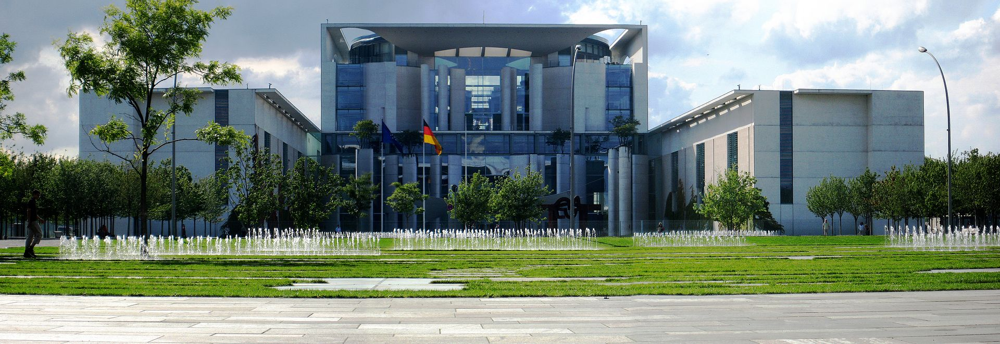
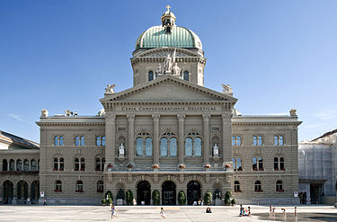

До кольорової гамми райдуги входять:
- Червоний
- Жовтогарячий
- Жовтий
- Зелений
- Блакитний
- Синій
- Фіолетовий
- Червоний
- Жовтогарячий
- Жовтий
- Зелений
- Блакитний
- Синій
- Фіолетовий
Герма́ния (нем. Deutschland), официальное название — Федерати́вная Респу́блика Герма́ния (нем. Bundesrepublik Deutschland), ФРГ (нем. BRD) — государство в Центральной Европе. Площадь территории — 357 408,74 км². Численность населения на 31 декабря 2018 года — 83 019 200 жителя. Занимает 18-е место в мире по численности населения (2-е в Европе) и 62-е в мире по территории (8-е в Европе).
Столица — Берлин. Государственный язык — немецкий. Около 65 % населения исповедует христианство.
По государственному устройству является федеративным государством в составе 16 субъектов — федеральных земель (Бавария, Баден-Вюртемберг, Берлин, Бранденбург, Бремен, Гамбург, Гессен, Мекленбург-Передняя Померания, Нижняя Саксония, Рейнланд-Пфальц, Саар, Саксония, Саксония-Анхальт, Северный Рейн — Вестфалия, Тюрингия, Шлезвиг-Гольштейн). Форма государственного правления — парламентская республика. Пост Федерального канцлера ФРГ с 22 ноября 2005 года занимает Ангела Меркель (ХДС), с 19 марта 2017 года должность Федерального президента ФРГ занимает Франк-Вальтер Штайнмайер (СДПГ), который выполняет представительские функции в стране.
Расположенная в центре Европы Германия омывается водами Балтийского и Северного морей. Граничит с Данией на севере, Польшей и Чехией на востоке, Австрией и Швейцарией на юге, Францией, Люксембургом, Бельгией и Нидерландами на западе.

Германия — страна с динамично развивающейся экономикой. Объём ВВП за 2017 год составил 3,685 триллиона долларов США (около 44 550 долларов США на душу населения). Денежная единица — евро.
Швейца́рия (нем. die Schweiz, фр. Suisse, итал. Svizzera, романш. Svizra), официально — Швейца́рская Конфедера́ция (лат. Confoederatio Helvetica, нем. Schweizerische Eidgenossenschaft, фр. Confédération suisse, итал. Confederazione Svizzera, романш. Confederaziun svizra) — суверенное государство, расположенное на стыке западной, центральной и южной Европы. Это — федеративная республика, состоящая из 26 кантонов с федеральными властями в Берне[10].
 Швейцария не имеет выхода к морю и граничит с Италией на юге, Францией на западе, Германией на севере и Австрией и Лихтенштейном на востоке. Страна географически разделена между Альпами, швейцарским плато и Юрой, охватив общую площадь 41 285 км². В то время как Альпы занимают большую часть территории, швейцарское население численностью примерно 8,5 млн человек сосредоточено в основном на плато, где расположены крупнейшие города, среди которых два глобальных города — Цюрих и Женева. Создание Швейцарского союза относится к позднесредневековому периоду и стало результатом ряда военных успехов против Австрии и Бургундии. Независимость Швейцарии от Священной Римской империи была формально признана при заключении Вестфальского мира в 1648 году. Со времён Реформации XVI века Швейцария придерживалась политики вооружённого нейтралитета, она не вела внешних войн с 1815 года и не вступала в ООН до 2002 года. Тем не менее она проводит активную внешнюю политику и участвует в строительстве мира во всём мире. Швейцария является местом появления Красного Креста, одной из старейших и наиболее известных гуманитарных организаций в мире, и является домом для многочисленных международных организаций, включая второе по величине отделение ООН. Она является одним из основателей Европейской ассоциации свободной торговли, но не входит в Европейский союз, Европейскую экономическую зону или Еврозону. Однако она участвует в Шенгенской зоне и Европейском едином рынке через двусторонние договоры.
А́встрия (нем. Österreich), официальное название — Австри́йская Респу́блика (Republik Österreich) — государство в Центральной Европе. Население составляет 8,46 млн человек, территория — 83 879 км². Занимает 94-е место в мире по численности населения и 112-е по территории.

Столица — Вена. Государственный язык — немецкий.
Федеративное государство, парламентская республика. С 7 января 2020 года федеральным канцлером является Себастьян Курц.
Подразделяется на 9 федеральных земель: Бургенланд, Каринтия, Нижняя Австрия, Верхняя Австрия, Зальцбург, Тироль, Штирия, Форарльберг, Вена.
На севере граничит с Чехией (362 км), на северо-востоке — со Словакией (91 км), на востоке — с Венгрией (366 км), на юге — со Словенией (330 км) и Италией (430 км), на западе — с Лихтенштейном (35 км) и Швейцарией (164 км), на северо-западе — с Германией (784 км).
Около 74 % населения католики.
Индустриальная страна с динамично развивающейся экономикой. Объём ВВП по паритету покупательной способности за 2017 год составил 441 млрд долларов США (около 50 000 долларов на душу населения). Денежная единица — евро.
Член Организации Объединённых Наций, Европейского союза. В 1955 году провозгласила постоянный нейтралитет и неприсоединение к каким-либо военным блокам.